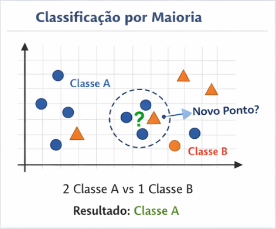
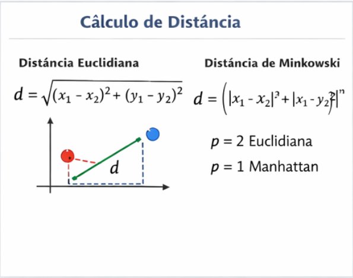
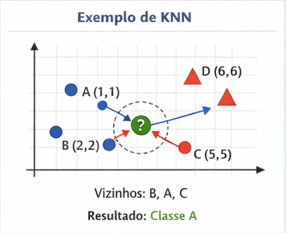

K-Nearest Neighbors (KNN)
Algoritmo baseado em proximidade
Hoje vou apresentar o KNN, um dos algoritmos mais simples e intuitivos do Machine Learning.
O que o KNN faz?
- Classifica novos dados
- Baseado em similaridade
- Também pode fazer regressão
Intuição
- "Diga-me com quem andas..."
- Classificação por maioria
Visualização

Como o KNN classifica?
- Escolher K (n_neighbors)
- Calcular distância
- Selecionar vizinhos mais próximos
- Classificar por maioria
Parâmetros do KNN
- n_neighbors: número de vizinhos
- metric: tipo de distância
Distância Euclidiana
d = √((x₁ - x₂)² + (y₁ - y₂)²)
Distância de Minkowski
d = ( |x₁ - x₂|^p + |y₁ - y₂|^p )^(1/p)
- p = 2 → Euclidiana
- p = 1 → Manhattan
Exemplo de Distância

Exemplo de Classificação
- Pontos conhecidos:
- A(1,1) → Classe 🔵
- B(2,2) → Classe 🔵
- C(5,5) → Classe 🔴
- D(6,6) → Classe 🔴
Cálculo das Distâncias
- P → A = 2.82
- P → B = 1.41
- P → C = 2.82
- P → D = 4.24
Classificação
- Vizinhos mais próximos:
- B (🔵), A (🔵), C (🔴)
- Resultado: 🔵
Visualização do Exemplo

O papel do K
- K pequeno → sensível a ruído
- K grande → mais estável
Vantagens
- Simples
- Fácil de entender
- Sem treinamento complexo
Desvantagens
- Lento com muitos dados
- Sensível à escala
- Escolha do K impacta muito
Conclusão
- Baseado em proximidade
- Fácil implementação
- Muito usado como baseline